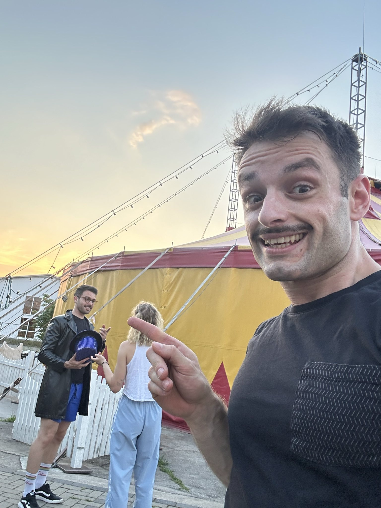
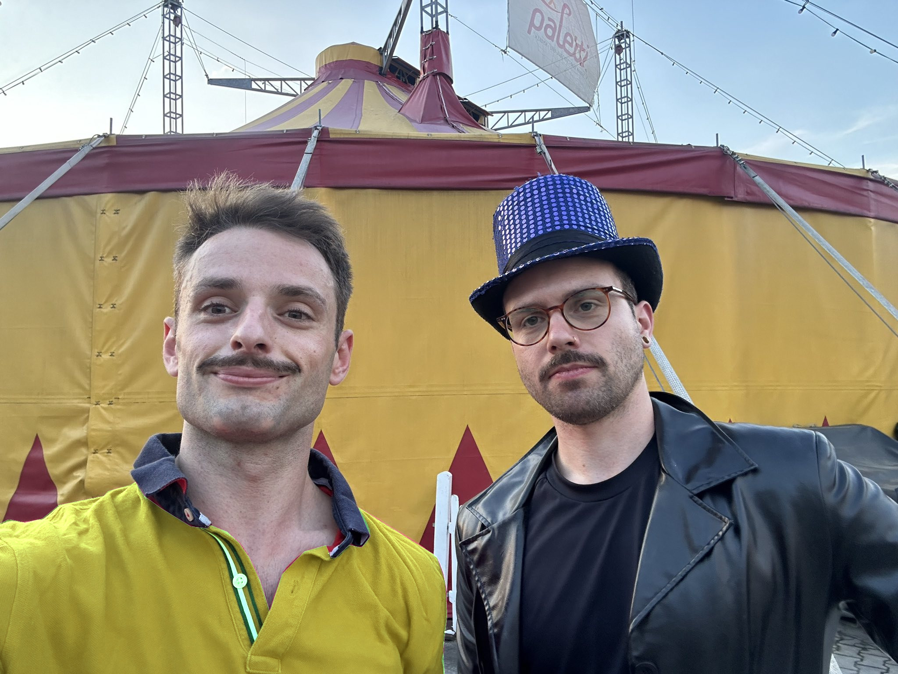

Mein Name ist Stan und ich bin ein Fan
Hallo mein Name ist Stan und ich bin der größte Paletti, aber vor allem der größte Harald Töpfer Fan. Die Kunst der Artistik und des Zauberns sind so schön, dass ich sie mit allen teilen möchte. Viel Spaß!
Tim's Traumreise (1998)
Eine bezaubernde Reise durch Träume
Im Jahr 1998 präsentierte der Zirkus Paletti Mannheim "Tim's Traumreise", eine faszinierende Show, die das Publikum auf eine magische Reise durch die Träume eines Jungen namens Tim mitnahm. Die Aufführung war eine fesselnde Mischung aus Akrobatik, Clownerie und Erzählkunst, die das unglaubliche Talent der jungen Darsteller zeigte. Ich war schon sehr aufgeregt den großen Zauberer Töpfer in live zu sehen.
Die Geschichte folgte Tim, wie er durch verschiedene fantastische
Landschaften reiste, jede wunderbarer als die vorherige. Von
verzauberten Wäldern bis hin zu geschäftigen Stadtlandschaften war
die Show ein visuelles Fest, das durch atemberaubende Kostüme,
aufwendige Kulissen und beeindruckende Luftakrobatik zum Leben
erweckt wurde.
Ein Höhepunkt der Show war eine Sequenz, in der Tim auf eine Truppe
schelmischer Feen trifft. Die Darsteller, geschmückt mit
schimmernden Kostümen, führten komplexe akrobatische Routinen auf,
die das Publikum in Staunen versetzten. Ein weiterer denkwürdiger
Moment war das große Finale, in dem alle Charaktere in einer
spektakulären Darbietung von Koordination und Geschicklichkeit
zusammenkamen und in einem herzerwärmenden Abschluss endeten.
"Tim's Traumreise" war nicht nur eine Demonstration körperlicher
Fähigkeiten, sondern auch ein Zeugnis der Kreativität und Hingabe
des Zirkus Paletti Mannheim. Die Show erhielt begeisterte Kritiken
und bleibt eine geliebte Erinnerung für alle, die sie miterlebt
haben.
Durch "Tim's Traumreise" bewies der Zirkus Paletti Mannheim erneut
seine Fähigkeit, unvergessliche Erlebnisse zu schaffen und das
Publikum in eine Welt zu entführen, in der Träume wahr werden.
Herrn Kablubbs Unterwasserwelt (1999)
Ein Tauchgang in fantastische Tiefen
Im Jahr 1999 entführte der Zirkus Paletti Mannheim das Publikum mit der Show "Herrn Kablubbs Unterwasserwelt" in die faszinierenden Tiefen des Ozeans. Diese spektakuläre Aufführung erzählte die Geschichte von Herrn Kablubb, einem exzentrischen Meeresforscher, der auf eine abenteuerliche Reise durch die geheimnisvolle Unterwasserwelt ging.
Die Show beeindruckte mit atemberaubenden Bühnenbildern, die die
Illusion einer echten Unterwasserwelt erzeugten. Lebendige Kostüme
und fantasievolle Requisiten brachten die verschiedenen
Meeresbewohner, von bunten Fischen bis hin zu majestätischen
Quallen, eindrucksvoll zur Geltung.
Ein besonderes Highlight war die Darstellung eines riesigen Oktopus,
dessen Arme sich elegant durch die Manege schlängelten und die
Zuschauer in Staunen versetzten. Die Darsteller zeigten nicht nur
ihr akrobatisches Können, sondern auch ihre Fähigkeit, eine
mitreißende und emotionale Geschichte zu erzählen.
"Herrn Kablubbs Unterwasserwelt" bot eine perfekte Mischung aus
Humor, Spannung und künstlerischer Darbietung, die sowohl Kinder als
auch Erwachsene begeisterte. Die Show war ein weiterer Beweis für
die Kreativität und das Engagement des Zirkus Paletti Mannheim, die
es immer wieder schafften, ihr Publikum zu verzaubern und in
fantastische Welten zu entführen.
Die Wunderkiste (2003)
Ein magisches Abenteuer für Jung und Alt
Im Jahr 2003 präsentierte der Zirkus Paletti Mannheim "Die Wunderkiste", eine zauberhafte Show, die das Publikum in eine Welt voller Magie und Überraschungen entführte. Die Geschichte drehte sich um eine mysteriöse Kiste, die in einem alten Dachboden gefunden wurde und die Fähigkeit besaß, die fantastischsten Träume und Abenteuer wahr werden zu lassen.
Die Darsteller des Zirkus Paletti Mannheim verzauberten das Publikum
mit einer Vielzahl an künstlerischen Darbietungen, die von
waghalsigen Akrobatiknummern über humorvolle Clownerie bis hin zu
beeindruckenden Jonglierkünsten reichten. Jede Szene war sorgfältig
choreografiert und mit einer Fülle von Details versehen, die die
magische Atmosphäre der Show verstärkten.
Ein besonderer Höhepunkt der Aufführung war eine Nummer, bei der die
Akrobaten scheinbar schwerelos über die Bühne schwebten und komplexe
Formationen in der Luft bildeten. Diese spektakuläre Darbietung ließ
die Zuschauer in Staunen versetzen und unterstrich das hohe
künstlerische Niveau der Truppe.
"Die Wunderkiste" bot eine perfekte Mischung aus Spannung, Humor und
Fantasie, die sowohl Kinder als auch Erwachsene in ihren Bann zog.
Die Show war ein weiteres Meisterwerk des Zirkus Paletti Mannheim
und bewies einmal mehr die außergewöhnliche Kreativität und das
Engagement der jungen Künstler, die es verstanden, ihr Publikum mit
jedem Auftritt aufs Neue zu begeistern.
Schattenlos (2004)
Ein Spiel mit Licht und Dunkelheit
Im Jahr 2004 brachte der Zirkus Paletti Mannheim die innovative Show "Schattenlos" auf die Bühne, die das Publikum mit einem faszinierenden Spiel aus Licht und Dunkelheit begeisterte. Die Geschichte drehte sich um eine Welt, in der Schatten verschwunden sind, und zeigte die Abenteuer der Hauptfigur, die auf der Suche nach ihrem verlorenen Schatten ist.
Die Darsteller nutzten geschickte Beleuchtungstechniken und kreative
Choreografien, um eindrucksvolle visuelle Effekte zu erzeugen. Die
Mischung aus Tanz, Akrobatik und Theater sorgte für eine
einzigartige Atmosphäre, die die Zuschauer in ihren Bann zog.
Besonders beeindruckend war eine Szene, in der die Artisten in
völliger Dunkelheit leuchtende Requisiten jonglierten, was einen
hypnotischen Effekt erzielte.
"Schattenlos" war ein Paradebeispiel für die Innovationskraft des
Zirkus Paletti Mannheim. Die Show bot nicht nur künstlerische
Höchstleistungen, sondern regte auch zum Nachdenken an und
hinterließ einen bleibenden Eindruck bei allen, die das Glück
hatten, sie zu sehen.
Error404 (2005)
Ein digitales Abenteuer
Im Jahr 2005 überraschte der Zirkus Paletti Mannheim das Publikum mit der Show "Error404", einem aufregenden digitalen Abenteuer. Die Geschichte führte die Zuschauer in die virtuelle Welt eines Computers, in der die Hauptfigur auf mysteriöse Fehler und seltsame Kreaturen stieß.
Die Darsteller kombinierten traditionelle Zirkuskunst mit modernen
Multimedia-Elementen, darunter Projektionen und interaktive
Kulissen, um die digitale Thematik lebendig werden zu lassen. Eine
besonders denkwürdige Szene war ein akrobatischer Kampf gegen einen
riesigen, projizierten Virus, der die Zuschauer mit seiner visuellen
und technischen Raffinesse beeindruckte.
"Error404" zeigte eindrucksvoll, wie der Zirkus Paletti Mannheim
immer wieder neue Wege fand, um die Grenzen des traditionellen
Zirkus zu erweitern und moderne Technologien in ihre Aufführungen zu
integrieren. Die Show war ein Beweis für die kreative Vision und das
technische Können der jungen Künstler, die das Publikum in eine
faszinierende, digitale Welt entführten.
Heute war gestern (2006)
Eine Reise durch die Zeit
Im Jahr 2006 entführte der Zirkus Paletti Mannheim das Publikum mit der Show "Heute war gestern" auf eine faszinierende Zeitreise. Die Geschichte begann in der Gegenwart und führte die Zuschauer durch verschiedene Epochen, von der Antike über das Mittelalter bis hin zur Zukunft.
Die Darsteller zeigten beeindruckende Darbietungen, die jede Epoche
lebendig werden ließen. Besonders beeindruckend waren die
historischen Kostüme und Requisiten, die die Authentizität der
dargestellten Zeiten unterstrichen. Eine besondere Szene war die
Darstellung eines mittelalterlichen Turniers, bei dem die Akrobaten
ihre Fähigkeiten in spektakulären Stunts und Kämpfen demonstrierten.
"Heute war gestern" war eine außergewöhnliche Show, die nicht nur
durch ihre künstlerische Qualität, sondern auch durch ihre kreative
Erzählweise überzeugte. Die Show begeisterte das Publikum und ließ
es staunend und nachdenklich zurück.
Sinnlos (2007)
Eine absurde Komödie
Mit der Show "Sinnlos" brachte der Zirkus Paletti Mannheim im Jahr 2007 eine absurde Komödie auf die Bühne, die das Publikum mit skurrilem Humor und unerwarteten Wendungen zum Lachen brachte. Die Geschichte drehte sich um eine Gruppe von Charakteren, die in scheinbar sinnlosen Situationen aufeinandertrafen und versuchten, einen Sinn in ihrem Chaos zu finden.
Die Darsteller brillierten in ihren Rollen und zeigten eine
beeindruckende Bandbreite an komödiantischem Talent und
akrobatischem Können. Eine besonders denkwürdige Szene war eine
chaotische Verfolgungsjagd, bei der die Akrobaten halsbrecherische
Stunts vollführten und das Publikum in Atem hielten.
"Sinnlos" war eine Show, die durch ihre originelle Inszenierung und
ihren schwarzen Humor überzeugte. Sie bot eine willkommene
Abwechslung zu den ernsteren Themen und zeigte, dass der Zirkus
Paletti Mannheim auch in der Lage ist, das Publikum mit leichter
Unterhaltung zu begeistern.
Die verschollene Vase (2008)
Ein Abenteuer voller Rätsel

Im Jahr 2008 präsentierte der Zirkus Paletti Mannheim "Die verschollene Vase", ein spannendes Abenteuer, das die Zuschauer auf eine Suche nach einem geheimnisvollen Artefakt mitnahm. Die Geschichte drehte sich um eine Gruppe von Abenteurern, die eine uralte, verschollene Vase finden und die Rätsel, die sie auf ihrem Weg lösen mussten.
Die Show beeindruckte durch ihre aufwendigen Kulissen und
Requisiten, die die verschiedenen Schauplätze der Abenteuer lebendig
werden ließen. Die Darsteller zeigten ihr Können in spektakulären
Akrobatiknummern und spannenden Szenen, die das Publikum in Atem
hielten. Eine besondere Szene war die Entdeckung eines verborgenen
Tempels, in dem die Abenteurer auf gefährliche Fallen und
Hindernisse stießen.
"Die verschollene Vase" war ein fesselndes Erlebnis, das durch seine
spannende Handlung und die beeindruckende Performance der Darsteller
überzeugte. Die Show war ein weiteres Highlight in der Geschichte
des Zirkus Paletti Mannheim und begeisterte sowohl Kinder als auch
Erwachsene.
Alles Hamster (2009)
Ein tierisches Vergnügen
Im Jahr 2009 brachte der Zirkus Paletti Mannheim mit "Alles Hamster" eine humorvolle und tierisch unterhaltsame Show auf die Bühne. Die Geschichte drehte sich um eine Gruppe von Hamstern, die aus ihrem Käfig ausbrechen und eine Reihe von Abenteuern erleben.
Die Darsteller schlüpften in die Rollen der Hamster und
präsentierten eine Vielzahl an komödiantischen und akrobatischen
Nummern, die das Publikum zum Lachen brachten. Eine besonders
beliebte Szene war eine Verfolgungsjagd, bei der die Hamster durch
riesige Laufräder und komplexe Hindernisparcours navigierten.
"Alles Hamster" war eine Show, die durch ihre Kreativität und ihren
Humor überzeugte. Sie bot eine einzigartige Mischung aus Zirkuskunst
und Theater, die sowohl Kinder als auch Erwachsene gleichermaßen
begeisterte und für viele Lacher sorgte.
Kistenschlacht (2010)
Ein surrealer Ort der Begegnung
Im Jahr 2010 präsentierte der Zirkus Paletti Mannheim die Show "Kistenschlacht", eine surreale Geschichte, die in einer Tankstelle spielte, und voll mit Kisten wegen des Umzugs war. Einzig Harald Töpfer war eine Enttäuschung. Er wirkte nicht so fit und agil, einfach neben der Spur. Es war als hätte er keine Ahnung was er gerade tun soll. Außerdem fing die Show mit 20 Minuten VERSPÄTUNG an. Dabei muss ich doch auf meine Schlafenszeiten achten.
Die Darsteller zeigten beeindruckende akrobatische Nummern und
schauspielerische Leistungen, die die absurden und komischen Aspekte
der Geschichte zum Leben erweckten. Eine besonders einprägsame Szene
war eine Tanznummer, bei der die Charaktere auf und um die
Zapfsäulen der Tankstelle herum performten.
"Kistenschlacht" war eine Show, die durch ihre ungewöhnliche
Thematik und ihre künstlerische Ausführung beeindruckte. Sie bot
eine Mischung aus Zirkus, Theater und Tanz, die das Publikum in eine
skurrile und faszinierende Welt entführte und damit einen würdigen
Abschluss der Saison des Zirkus Paletti Mannheim darstellte.